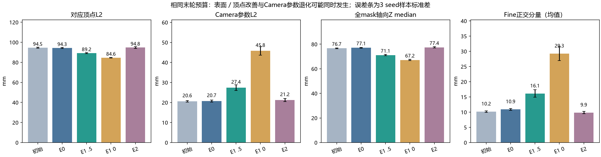
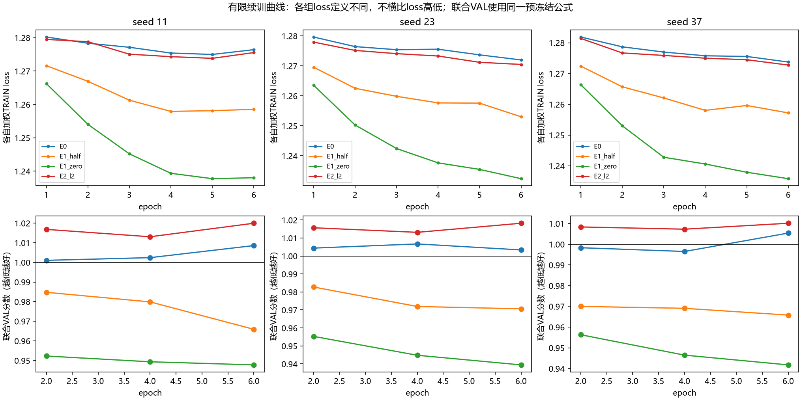
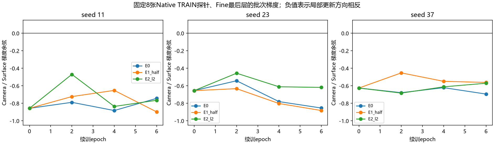

R5.1：固定Coarse的Fine监督消融
12组有限实验已完成。只改Camera监督或增加L2，不训练Body、不改Coarse、不增加模型结构，也不给新模型外挂Txyz。
读表先分清误差Native是合成真值对应顶点／Camera参数误差；Scan是渲染表面对clean深度的轴向Z误差；HuMMan是独立B相机实测点到预测三角面；BEHAVE同时报独立三相机表面距离与拟合SMPL参考PVE。它们不能合成一个总分，也都不是穴位误差。
每格大字为3 seed均值±样本标准差，小字给出每个seed。默认显示相同6轮预算的末轮；两套Best完整保留，没有预注册“必须选末轮”或事后隐藏不利选择。
结论先说清楚Camera权重2→0.5只有很小的真实收益：HuMMan VAL 14.246→14.202 mm（0.044 mm），BEHAVE独立表面19.682→19.640 mm（仅2/3 seed改善）。完全去掉Camera监督虽改善Native，却让真实HuMMan VAL三seed全部变差。简单L2也没有稳定收益，联合选模三seed都退回原父模型。
这轮不支持“删掉Camera监督就能解决问题”，也没有消灭Fine的负收益帧。不启动E1+E2组合或新长跑。保留原R5和权重0.5候选，不宣称超过Official+Txyz。
1. 训练了什么，没训练什么
从原Full Last的seed11/23/37分别继续训练，同seed四组初始化、数据顺序、Coarse输出及可见Query完全相同。只更新rgb_local、local、fine_head。不同seed的父模型不同，这是配对续训筛查，不是3次从头训练。
额外训练：Native原TRAIN按身份哈希取64人×8张=512张；Scan原TRAIN按asset×camera-group比例取768张（9身份）。原父模型此前见过完整Native400训练身份和完整Scan训练集。每组6轮，AdamW恒定lr=1e-4、weight decay=1e-4；每步Native16＋Scan24，microbatch4。每组7个epoch权重均保留，在0/2/4/6轮评价。没有声称已收敛或学习率最优。
E0 Camera权重2；E1_half为0.5（实际是E0权重的四分之一，代码名不代表减半）；E1_zero为0；E2保持E0并加简单公制步长L2。Native Z/轮廓权重0.2/0.2；Scan为1.0664188982/4.6202386224。L2 λ=0.5933867854，只由TRAIN 32 Native＋32 Scan在初始最后层梯度标定为10%，不是按真实B效果挑选，也没有假设10–15mm噪声阈值。
2. 同预算末轮的Native取舍

身体网格固定，所以顶点/表面分数变化来自平移。Camera参数误差下降与工作表面改善不能互相代替。正交是相对Coarse→GT平移方向而言，不是相对后背法线，不能直接叫背部切向滑动；图中为均值，不能与旧报告8–9mm的中位数混比。
3. 全部数据集、全部seed与三种取权重方式
末轮：相同6轮预算
Native合成VAL：50身份／400帧
纹理扫描合成VAL：3身份／768视图
真实HuMMan TRAIN：18人／192帧
真实HuMMan VAL：4人／40帧
真实BEHAVE：3人／270帧，已消费子集
原规则Best：Native顶点
Native合成VAL：50身份／400帧
纹理扫描合成VAL：3身份／768视图
真实HuMMan TRAIN：18人／192帧
真实HuMMan VAL：4人／40帧
真实BEHAVE：3人／270帧，已消费子集
联合规则Best：深度＋覆盖约束
Native合成VAL：50身份／400帧
纹理扫描合成VAL：3身份／768视图
真实HuMMan TRAIN：18人／192帧
真实HuMMan VAL：4人／40帧
真实BEHAVE：3人／270帧，已消费子集
*全mask未命中像素按渲染Z=0计入。因此Native/Scan的full-mask P95可能有数米的漏覆盖惩罚，不能理解为已命中表面精度。共同命中必须连同命中率与IoU阅读。表中median/P95都是先逐帧计算，再按层级等权汇总，不是把所有点混在一起取分位数。HuMMan/BEHAVE先frame→sequence→identity；BEHAVE每帧先对三相机各自分位数取等权均值。Scan为frame→camera-group→asset→identity，各层等权。
Official＋Txyz是相同旧点集的历史强参考；HuMMan是共享Official缓存，三列复用配对参考，不冒充三次独立Official推理。BEHAVE保留原三seed参考差异。真实数据均已在历史分析中消费，不称全新泛化；封存Native/HuMMan TEST未读。BEHAVE物体遮挡、异常Depth及拟合参考偏差均保留，不能据此宣称裸背毫米精度或超过M³。
4. 固定的选模规则与实际选到哪一轮
旧规则：最小Native身份等权对应顶点误差。联合规则：Native与Scan的full-mask Z median分别除以同seed初值，两个比值等权平均；要求每个域的命中率和IoU均不低于初值1个百分点。可选epoch0，平分取早。epoch0意味着仍选原父模型。所有选模结果在打开新真实评价前冻结。

联合选模并非总能迁移：例如权重0.5、seed23旧规则选epoch4，HuMMan VAL median为14.939 mm；联合规则选epoch6，为15.056 mm。有限6轮不证明学习率最优，也不证明已收敛。
5. 实测梯度账本

这里测的是固定8张Native TRAIN探针批次、Fine最后层的加权Camera与Z＋轮廓梯度。E0的12个检查点均为负，支持这些探针处存在局部目标竞争；不证明所有训练样本、全部网络层或全部历史错误都由它造成。E1_zero的加权Camera梯度为0，余弦未定义，没有伪造为0相关。完整范数、Z/轮廓各项、Scan与L2均保留在账本。
6. 救回旧坏帧，也检查新弄坏哪些帧
以下三数字按seed11 /23 /37排列；同预算末轮对照。旧坏帧按原Coarse→Fine名单保留，“救回”指新误差不再高于同帧原Coarse；“新增坏”指原先未坏但现在高于Coarse。Native Camera与BEHAVE PVE标签不能冒充独立表面负收益。
7. 真实开发集的逐项结论
- HuMMan VAL median，E1_half相对同预算E0：平均变化-0.044 mm；seed11/23/37分别-0.075/-0.031/-0.027，3/3 seed改善。
- HuMMan VAL median，E1_zero相对同预算E0：平均变化+0.109 mm；seed11/23/37分别+0.018/+0.248/+0.063，0/3 seed改善。
- HuMMan VAL median，E2_l2相对同预算E0：平均变化+0.209 mm；seed11/23/37分别+0.140/+0.224/+0.261，0/3 seed改善。
- HuMMan VAL P95，E1_half相对同预算E0：平均变化-0.038 mm；seed11/23/37分别+0.015/-0.022/-0.108，2/3 seed改善。
- HuMMan VAL P95，E1_zero相对同预算E0：平均变化+0.521 mm；seed11/23/37分别+0.702/+0.823/+0.037，0/3 seed改善。
- HuMMan VAL P95，E2_l2相对同预算E0：平均变化-0.029 mm；seed11/23/37分别-0.232/-0.096/+0.240，2/3 seed改善。
- BEHAVE held-out median，E1_half相对同预算E0：平均变化-0.041 mm；seed11/23/37分别-0.151/-0.027/+0.054，2/3 seed改善。
- BEHAVE held-out median，E1_zero相对同预算E0：平均变化+0.109 mm；seed11/23/37分别-0.032/+0.085/+0.275，1/3 seed改善。
- BEHAVE held-out median，E2_l2相对同预算E0：平均变化+0.455 mm；seed11/23/37分别+0.327/+0.349/+0.690，0/3 seed改善。
- BEHAVE拟合参考PVE，E1_half相对同预算E0：平均变化-0.210 mm；seed11/23/37分别-0.244/-0.126/-0.259，3/3 seed改善。
- BEHAVE拟合参考PVE，E1_zero相对同预算E0：平均变化-0.267 mm；seed11/23/37分别-0.447/-0.121/-0.232，3/3 seed改善。
- BEHAVE拟合参考PVE，E2_l2相对同预算E0：平均变化+0.884 mm；seed11/23/37分别+0.656/+0.834/+1.163，0/3 seed改善。
判断稳定优势必须同时看P95、逐身份和选择规则，不能只选最好的seed或单个median。上述是已消费开发数据上的描述性对照；没有临床或解剖准确度结论。
HuMMan VAL逐人：三seed平均，median / P95，单位mm
p001194与p001201的P95在权重0.5下仍恶化，不能只看四人平均。已知TRAIN失败身份p001195也没有被这一轮整体救回；每个身份、部位proxy与seed均见逐人表和部位表。
为什么这里BEHAVE父模型是59.64 mm，旧报告却是61.06 mm？
同一270帧按帧平均为61.0636 mm；按本轮冻结的frame→sequence→identity等权为59.6396 mm。旧报告也保存过两种口径；本轮逐帧复算相符，没有把权重变化算成模型提升。Official+Txyz分别为56.2400 /55.7337 mm。完整对账。
8. 失败图与审计
失败图单独列出相同B点集和同一坐标中的Mesh。没有用B对齐、优化、选择损失或checkpoint。完整RGB→Official Backbone/Decoder端到端耗时仍未测；本轮缓存训练速度不能替代完整系统速度。
合成分域分seed汇总 · 真实汇总 · 全部真实逐帧结果 · 完整分类转移 · Native逐帧 · Scan逐帧 · 梯度账本